Keylime Interactive · AI · Fintech · Sponsored project
Finding opportunities for innovation in the financial sector
Where are financial experiences falling short, and how can design make them better? I led a team of nine UX designers through exploratory research, workshops, and concept development to identify unmet needs and uncover opportunities for improvement.
Overview
Key Lime Interactive (KLI), a UX research and customer experience consulting agency, gave our team an open-ended challenge with no predefined product: where are the opportunities for improvement in the financial sector? A team of nine UX designers explored it through research, interviews, and workshops to uncover financial challenges and underserved needs.
Over 16 weeks the team moved through three milestones, from broad exploration to one focused concept. We explored how digital experiences could better support users, and tested our design with 12 people.
16-week project plan
The Problem
Where are the opportunities for improvement in finance?
Financial services influence nearly every part of everyday life, from spending and saving to investing and managing debt. Yet financial products don't always address the challenges people face or make complex information easy to understand. With no predefined product or problem to solve, the challenge was to explore the financial landscape, identify meaningful pain points, and find opportunities where user-centered design could make a difference.
How might digital experiences better address unmet needs within the financial sector?
Dozens of tools, each doing one thing
Finding the gaps in the tools
Process
Milestone 1Exploring the financial landscape
Where should the research focus? The project began with broad secondary research into financial behaviors, challenges, and emerging opportunities. Literature reviews examined budgeting, saving, debt, investing, and the influence of social media on spending habits. Early findings highlighted financial literacy as a significant challenge for college students. Interviews explored students' financial knowledge, spending behaviors, and experiences with existing financial tools. I led the literature review and developed the interview protocol, helping establish the research foundation.
Three patterns emerged:
Financial knowledge
Students often lacked confidence in financial topics and weren't sure where to find reliable guidance.
Spending behaviors
Everyday purchases, social influences, and limited spending awareness made managing money difficult.
Interest in investing
Students expressed interest in growing their money but often lacked the knowledge to get started.
College students presented an opportunity to improve financial literacy, with budgeting and investing emerging as areas worth exploring.
Milestone 2Comparing existing solutions
A comparative analysis examined existing financial tools to understand how they supported budgeting, investing, and financial literacy. This provided context for identifying opportunities that existing experiences might overlook.
A turning point: Investing starts with budgeting
What do students need before they can invest? Early student research revealed interest in investing, but also uncertainty about how to begin. Two expert interviews with a Purdue financial coach and personal finance professor challenged the direction. Both emphasized that budgeting was the most important foundation for college students' financial literacy. Without understanding spending habits and managing money consistently, students lacked the financial foundation needed to approach investing confidently. This changed the focus from helping students grow their money to helping them understand and manage it first.
Before helping students invest, the experience needed to help them build a reliable budget.
Understanding budgeting barriers
Why aren't students budgeting? With budgeting emerging as the central opportunity, a discovery workshop explored students' spending habits, financial awareness, and motivation. I created and facilitated the workshop, using interactive activities to help participants reflect on their financial decisions.
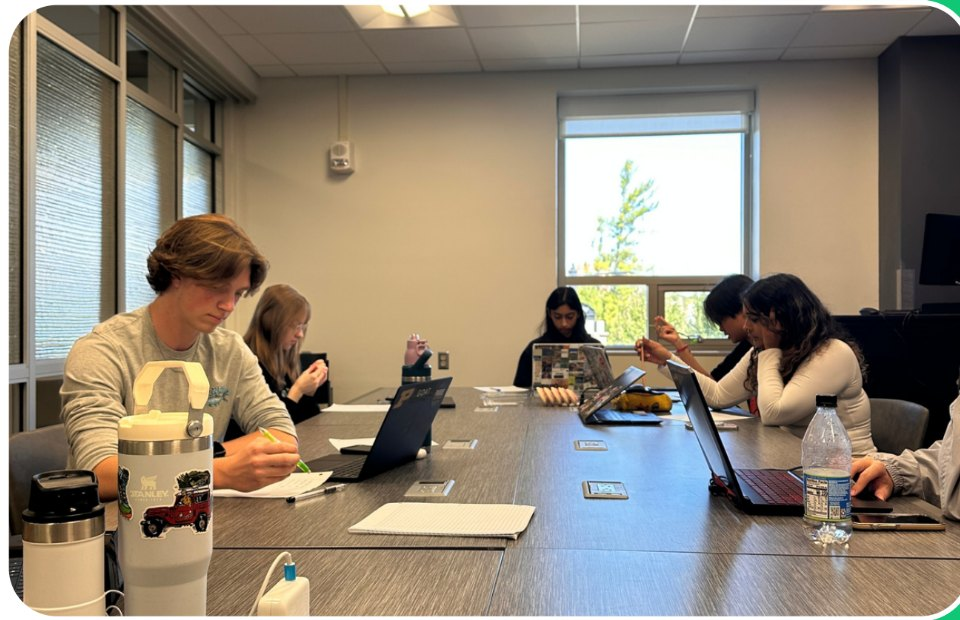
Three findings stood out:
Spending awareness
Students frequently spent more than they expected, especially on everyday purchases.
Motivation
Students understood the benefits of budgeting but struggled to track spending consistently.
Incentives
Financial rewards generated interest, although participants questioned whether incentives alone could sustain their habits.
Students didn't need convincing that budgeting mattered. They needed a process that felt manageable and worthwhile.
Milestone 3Turning insights into opportunities
What would students actually use? I designed and facilitated a co-design workshop where students explored potential solutions and identified features that could make budgeting more approachable.
Three priorities emerged:
Automation
Students wanted fewer repetitive tasks and less manual expense tracking.
Accessibility
Simple interactions, minimal setup, and understandable financial information were more appealing than complex features.
Familiarity
Students preferred budgeting within an app they already used, particularly their banking app.
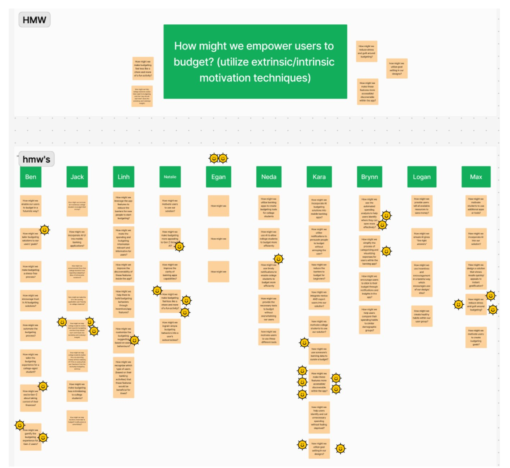
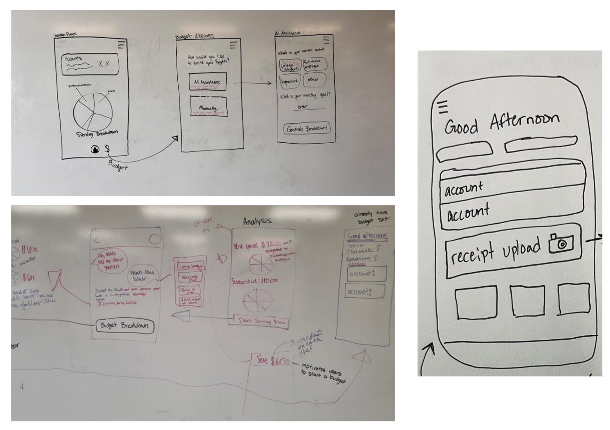
Budgeting could become more approachable through automation built into familiar financial experiences.
Exploring two concepts
The research informed two potential directions: a receipt scanner with rewards and an AI-assisted budgeting tool.
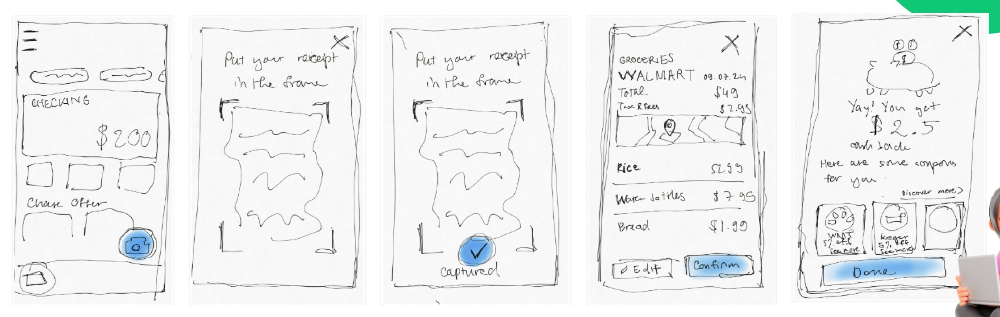
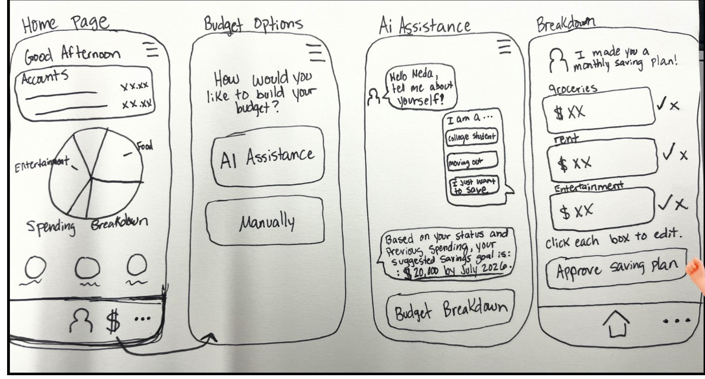
Concept testing with 12 college-aged participants explored both approaches.
Receipt scanner
Participants liked the potential cashback rewards and straightforward concept. However, many rarely saved receipts and worried they would forget to scan them consistently.
AI budgeting assistant
Participants appreciated spending visualizations and the flexibility of automated or manual budgeting. Concerns centered on trust and understanding how AI would manage financial information.
Preferences were evenly split between the concepts. The broader research pointed toward AI-assisted budgeting as a stronger fit for students' desire to reduce manual effort, while integration into an existing banking app addressed the need for familiarity.
Concept testing alone didn't identify a clear winner. Earlier research provided the context for pursuing automation, with trust and transparency remaining important design considerations.
Design & testing
The AI-assisted budgeting concept developed into low-fidelity wireframes within a mobile banking app. Students could generate a spending plan from their financial history or create a budget manually, with visual breakdowns to help understand their spending.
Testing with 12 college-aged participants evaluated comprehension, usability, and trust.
Additional feedback highlighted unclear explanations of how money would be handled and uncertainty around some interface elements.
Students were open to AI-assisted budgeting, but trusting the concept didn't mean they understood how it worked.
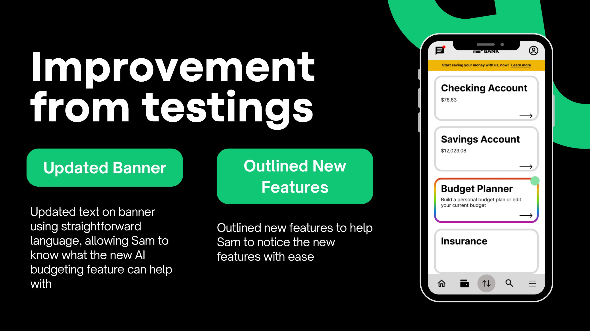
The Solution
Making budgeting easier through AI
An AI-assisted budgeting concept integrated into a familiar mobile banking experience. Students can generate personalized spending plans using their financial history or create budgets manually. Four features connect the design to the research.
Budget where you already bank
Budgeting lives within the banking app, removing the need to download and learn another financial tool.
Choose AI or manual budgeting
AI-generated spending plans reduce manual setup, while a manual option gives students control over how they organize their money.
Understand your spending
Visual breakdowns organize expenses into categories, making spending patterns and budget allocations easier to explore.
Understand how AI works
Feature explanations provide context around automated budgeting, helping students understand the experience before using it.
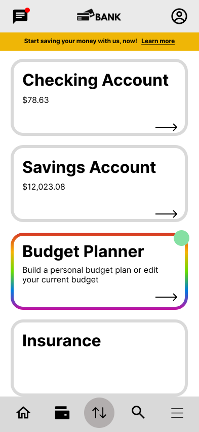
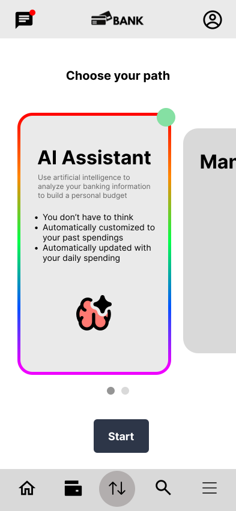
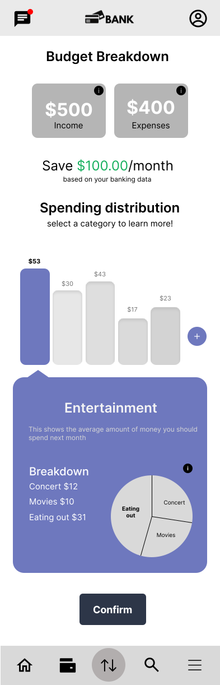
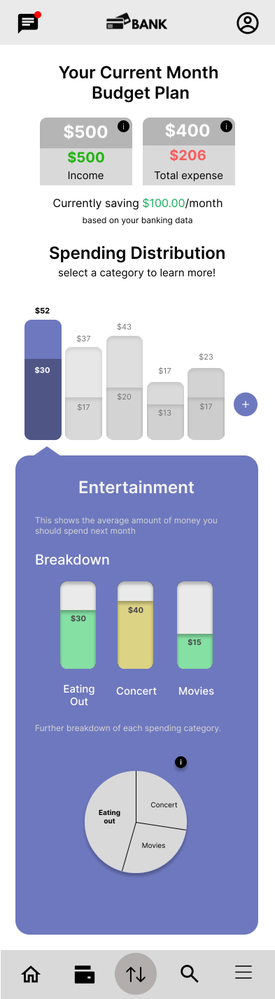
The final mid-fidelity designs bring budgeting into an existing routine, with an emphasis on simplicity, automation, and financial clarity.
The prototype flow
The interactive prototype walks students from the bank home screen through choosing a path, reviewing and editing an AI-generated breakdown, and confirming their plan.
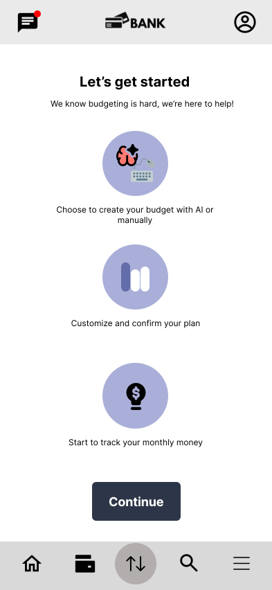
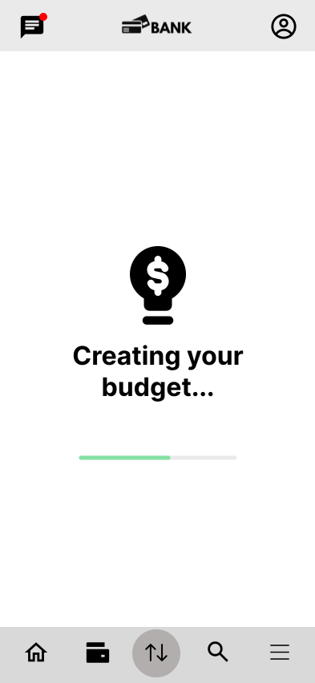
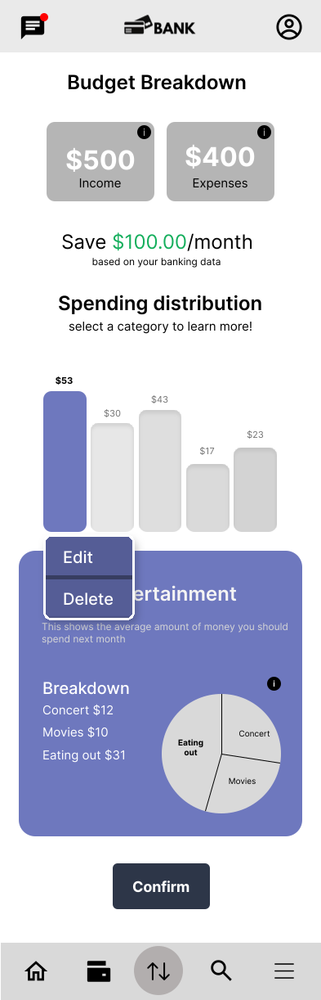
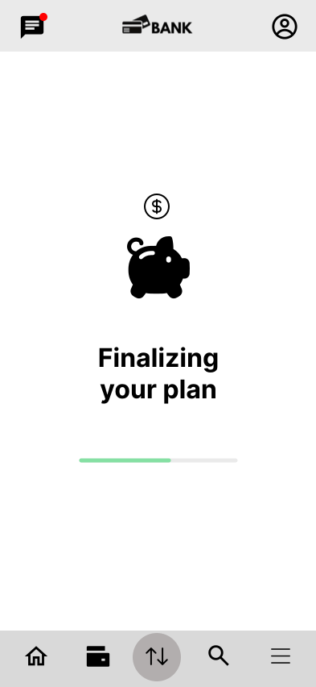
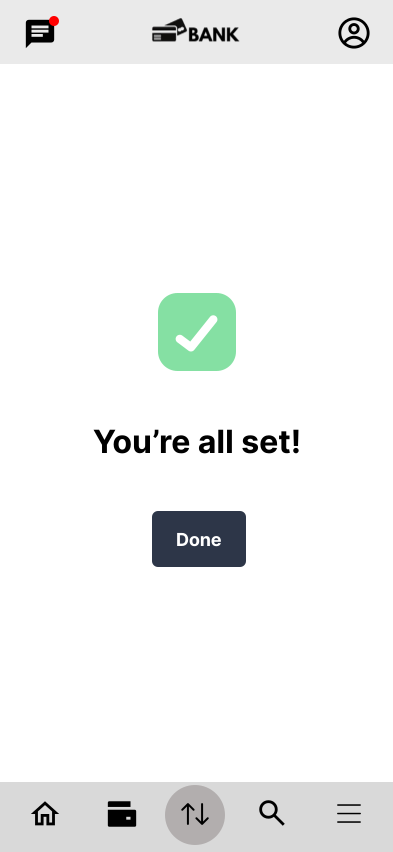
The final mid-fidelity designs focused on reducing effort, improving financial clarity, and making budgeting more approachable for college students.
Results
The project progressed from an open-ended financial sector challenge to a focused product opportunity informed by research and testing.
Testing also revealed opportunities to improve AI transparency, feature explanations, and financial visualizations. The project concluded with research findings, documentation, and mid-fidelity designs delivered to Key Lime Interactive.
Impact & learnings
My impact
Coordinated milestones, delegated responsibilities, and guided the team through an open-ended research and design process.
Led meetings with KLI, served as the primary point of contact, and communicated progress and research findings throughout the project.
Led the literature review and developed interview protocols to investigate financial knowledge, behaviors, and unmet needs.
Created and facilitated both workshops, turning participants' financial challenges and preferences into actionable product opportunities.
What I learned
Expert interviews challenged the initial interest in investing and revealed budgeting as a more foundational need.
Workshop activities highlighted the importance of automation, familiar tools, and reducing the effort required to manage money.
Concept testing produced an even split, but earlier findings helped clarify which direction addressed the underlying problem.
Clear responsibilities, consistent communication, and room to adapt helped keep nine designers aligned as the project's focus evolved.
Limitations & next steps
Limitations
Next steps
AI transparency needs refinement. Participants trusted the concept but wanted clearer explanations of how automated budgeting worked.
1Improve feature explanations and validate understanding of AI-generated spending plans.
Financial visualizations caused confusion. Some participants struggled to distinguish between current spending and future budget allocations.
2Refine the visualizations and test whether students can interpret their spending accurately.
Long-term behavior wasn't measured. Testing captured reactions to concepts and wireframes rather than sustained budgeting habits.
3Evaluate a functional prototype over time to understand engagement and changes in financial behavior.